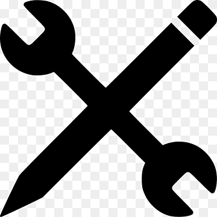
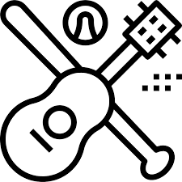

Personal Growth
EducationClick Icon for Info |
SkillsClick Icon for Info |
ActivitiesClick Icon for Info |
|
|
3D-Modeling
Power/Hand Tools Electrical Circuits Assembly Customer Service Microsoft |
Military
Sports Music Languages Engineering Arts & Crafts |